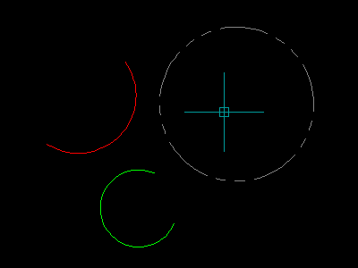

Ellipse to Arc
This page is delivered for consistency purposes only, as part of the LeeMac sample module of DynALisp, which shows how DynALisp turns existing AutoLISP programs into a module. The program and its description are the work of Lee Mac, who keeps all the credit for them. The original page, with the latest version, is on Lee Mac's website: https://lee-mac.com/ellipsetoarc.html
| Function Syntax | LM-EllipseToArc – original syntax: e2a (see aliases) |
| Current Version | 1.1 |
| Compatible with AutoCAD for Mac? | Yes |
| Compatible with AutoCAD LT? | Yes |
| Original Page | lee-mac.com/ellipsetoarc.html |
Program Description
Although a somewhat obscure program since Ellipses & Arcs are geometrically incompatible (unless the Ellipse has axes of equal length), this appears to be a relatively common request across the AutoCAD community, and so I thought I'd share a program to perform the task.
This program will allow the user to convert a selection of circular Ellipses & Elliptical Arcs (that is, Ellipses or Elliptical Arcs with axes of equal length) into Circles & Arcs respectively, whilst retaining all properties of the original objects.
The program will furthermore perform correctly with Ellipses & Elliptical Arcs constructed in any UCS, and should be supported on all versions of AutoCAD, on both a Windows & Mac OS (since the program does not use Visual LISP).
Example of Usage

Bundled program notes
;;-------------------------=={ Ellipse to Arc }==-----------------------;;
;; ;;
;; This program will allow the user to convert a selection of circular ;;
;; Ellipses & Elliptical Arcs (that is, Ellipses or Elliptical Arcs ;;
;; with axes of equal length) into Circles & Arcs respectively, whilst ;;
;; retaining all properties of the original objects. ;;
;; ;;
;; The program will furthermore perform correctly with Ellipses & ;;
;; Elliptical Arcs constructed in any UCS, and should be supported ;;
;; on all versions of AutoCAD, on both a Windows & Mac OS. ;;
;;----------------------------------------------------------------------;;
;; Author: Lee Mac, Copyright © 2013 - www.lee-mac.com ;;
;;----------------------------------------------------------------------;;
;; Version 1.0 - 2013-02-02 ;;
;; ;;
;; - First release. ;;
;;----------------------------------------------------------------------;;
;; Version 1.1 - 2015-03-14 ;;
;; ;;
;; - Incorporated 1e-3 tolerance on the ellipse axis ratio into the ;;
;; ssget selection filter. ;;
;;----------------------------------------------------------------------;;
Command Names And Aliases
As in every DynALisp module, each program of this sample module has one main command, named LM-*, and the original command names of Lee Mac's page are kept as its aliases: they run the same command, and can be added, renamed or removed in Dyl-Suite (saved in Resources\Aliases.csv).
| Command | Aliases | Name |
|---|---|---|
| LM-EllipseToArc | E2A | Ellipse To Arc |